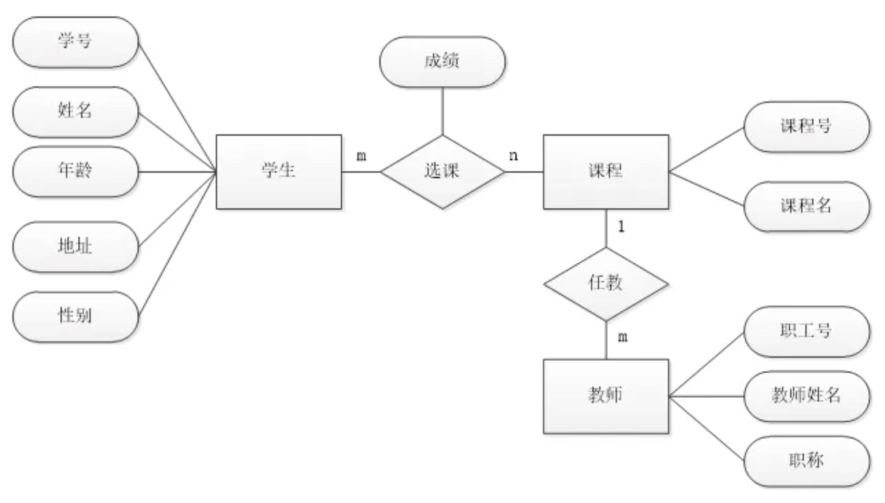
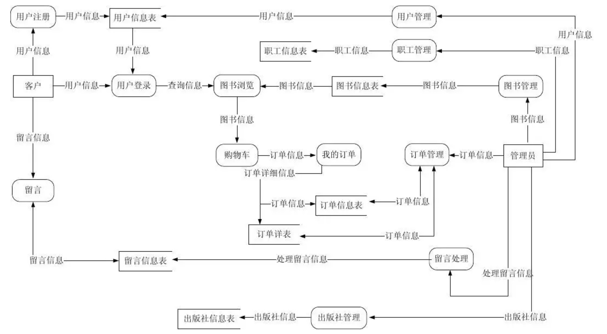
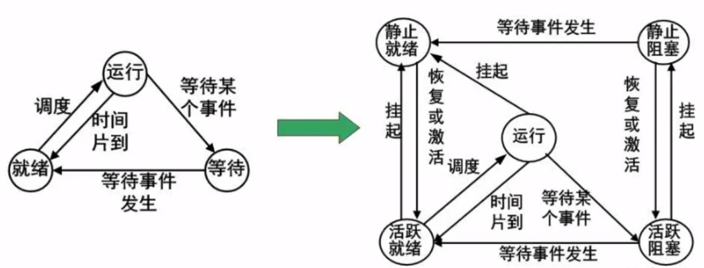
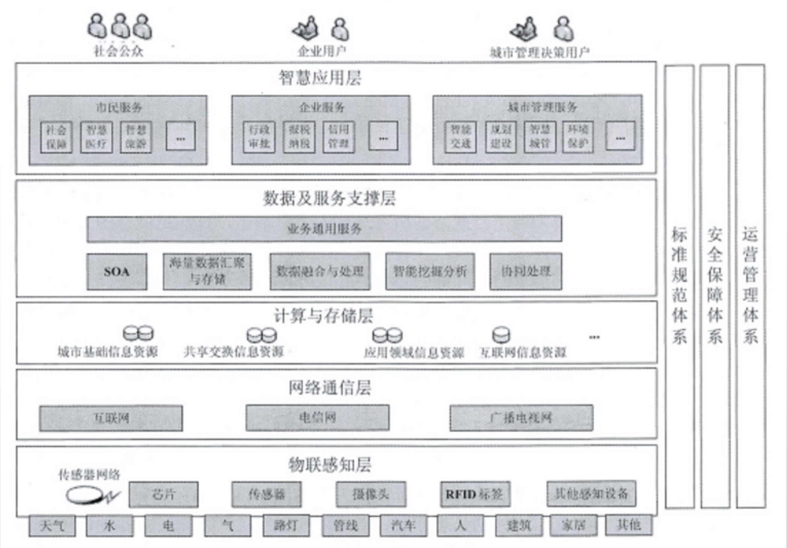

2、软件工程和新技术
需求层次 *
1
2
3
4
5
6
7
8
9
10
11
12
| * 业务需求
* 反映企业或客户对系统高层次的目标需求
* 用户需求
* 用户的具体目标或用户要求系统必须完成的任务
* 系统需求
系统的角度说明软件的需求，包括：
* 功能需求
* 软件功能
* 非功能需求
* 质量属性（易用性、可维护性、效率等）
* 设计约束
* 限制条件或补充规约等
|
质量功能部署（QFD）*
1
2
3
| * 常规需求
* 期望需求
* 意外需求（兴奋需求）
|
需求分析 *
需求分析就是把杂乱无章的用户要求和期望转化成用户需求。

 * 数据流图 （DFD）：表示功能模块
* 数据流图 （DFD）：表示功能模块




软件需求规格说明书（SRS）
1
2
3
4
5
6
7
8
9
| 内容包括：
* 范围
* 引用文件
* 需求
* 合格性规定
* 需求可追踪性
* 尚未解决的问题
* 注解
* 附录
|
UML *
基础概念
1
2
| UML的结构：构造块、规则、公共机制
三种基本构造块：事务、关系和图
|
UML四种关系
UML图种类
1
2
3
4
5
6
7
8
9
10
11
12
13
14
15
16
| * 类图
* 对象图
* 构件图
* 组合结构图
* 用例图
* 描述一组用例、参与者及他们之间的关系。
* 顺序图
* 也称序列图，是一种交互图，展示一种交互，有一组对象或参与者以及他们之间可能发送的消息构成。
* 通信图
* 定时图
* 状态图
* 活动图
* 部署图
* 制品图
* 包图
* 交互概览图
|
UML的五个系统视图
1
2
3
4
5
6
| 速记词：不用死记记
* 部署视图
* 用例视图
* 实现视图
* 进程视图
* 逻辑视图
|
面向对象分析阶段的核心工作是建立系统的用例模型与分析模型
软件架构风格
1
2
3
4
5
| 数据流风格：包括批处理序列和管道、过滤器两种风格。
调用返回风格：包括主程序子程序、数据抽象和面向对象，及层次结构。
独立构建风格：包括进程通信和事件驱动的系统。
虚拟机风格：包括解释器和基于规则的系统。
仓库风格：包括数据库系统，黑板系统和超文本系统。
|
测试类型
1
2
3
4
5
6
7
8
9
10
11
12
| * 单元测试
也称模块测试，检查每个模块能否正确实现设计说明书的内容，检查模块内可能出现的各种差错。
* 集成测试
检查模块之间以及模块和已集成的软件之间的接口关系，并验证是否符合设计要求。
* 确认测试
验证软件的功能、性能和其他特性是否与用户需求一致。
* 系统测试
系统测试对象是完整的、集成的计算机系统。目的是在真实系统工作环境下，验证系统是否正确连接是否满足规定要求。
* 配置项测试
检验软件配置项是否与需求说明书一致。
* 回归测试
测试软件变更之后，变更部分的正确性以及对软件原有的正确功能不损坏。
|
物联网架构
感知层
1
2
| 感知层是实现物联网全面感知的核心能力，是物联网中包括关键技术、标准化方面、产业化方面亟待突破的部分，关键在于具备更精确、更全面的感知能力，并解决低功耗、小型化和低成本的问题。
|
网络层
1
| 是物联网三层中标准化程度最高、产业化能力最强、最成熟的部分，关键在于为物联网应用特征进行优化和改进，形成协同感知的网络。
|
应用层
1
| 提供丰富的基于物联网的应用，是物联网发展的根本目标，将物联网技术与行业信息化需求相结合，实现广泛智能化应用的解决方案集，关键在于行业融合、信息资源的开发利用、低成本高质量的解决方案、信息安全的保障以及有效的商业模式的开发。
|
智慧城市
1
2
3
4
5
6
7
| 物联网在城市管理中综合应用就是智慧城市
速记词：勿忘技术智
* 物联感知层
* 网络通信层
* 计算与存储层
* 数据及服务支撑层
* 智慧应用层
|

云计算服务类型
1
2
3
| * IAAS 基础设施即服务
* PAAS 平台即服务
* SAAS 软件即服务
|
大数据特点
1
2
3
4
5
6
| 速记词：量多价真高
* Volume（大量）
* Variety（多样）
* Value（价值低）
* Velocity(高速）
* Veracity(真实性）
|
区块链的特点
1
2
3
4
5
6
7
| * 去中心化
* 自治性
* 集体维护
* 开放性
* 安全性
* 匿名性
* 完全透明
|